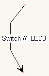

may, 2005
StateMachine Design
Introduction
A graphical statemachine design is often far more readible then plain computer language. Moreover a graphical statemachine can be understood by non-technician, while computer language can not (maybe that's the reason why there are so little statemachine programs available  ).
).
This program will generate code from a graphical designed statemachine, for JAL, Delphi and PICbsc. At this moment I'm not sure how the real embedding in the JALcc-codeeditor will be done (JALcc macro ?).
Let's first take a look at a very simple example. This example doesn't show the power of graphical statemachines at all, the real power will be shown, as soon as there are more then say 5 states.
Implementation
JAL: <mac> StateMachine Demo
PICbsc: ...
Delphi: copy and paste the code from the code generator
Example
|
|
The hardware on the left is one of the most simplest situations, that can be represented by a statemachine. Because of it's simplicity, it's a bad example in showing the power of statemachines. As a matter of fact, this hardware can be represented by just 1 line of software code:
lamp = switch
|
|
|
generated JAL code |
And here is shown how the same statemachine generates Delphi code. Note that it now uses the more readible (and more efficient) case statement.
Statemachine objects
You can use all Diagram Designer objects in a statemachine design, but only the following objects will produce code.
|
|
State
The state object has a lot connection points that can be connected to in- or out-going transitions and it a has an "stay in this state" transition. A state has 2 text blocks, the central textbox and the textbox that is fixed at the topright. The first line in the central textbox is the name of the state, the other lines of the central textblock is code, that is executed each time the statemachine walks through this state (or stays in this state). The textblock on the righttop is only executed each time the statemachine stays in this state (else statement). So this code is not executed, when the statemachine goes directly to another state after entering this state. |
|
 |
Transition
A transition is contains an optional condition (before the double slash) and optional some code. This code is executed once, when the transition takes place. You can also use the straight arrow lines, but this is not as convenient, because you cann't bend the arrow and cann't position the text. |
|
|
Init-State
The init-state is meant to initialize the statemachine. It differs from a normal state, because it doesn't have a condition (else statement) to remain in this state. And it should contain just one (outgoing) connection point. The first line in the central textbox represents the name of the statemachine. This name must be unique in the total program. Both the code in central textbox and the topright textbox are always executes once.
|
Syntax
Because the StateMachine codegeneration can generate code for different languages, the StateMachine uses it's own syntax.
This document uses the following definitions:
target Language = The language in which the generated code will be written
StateMachine Language = the language that's used in the graphical design
The syntax used in the StateMachine Language is based on the common notation used for (hardware) statemachine. A mix of Moore and Mealy definitions is possible.
The StateMachine Language knows 2 different sections, a condition section and a code section. The condition section and the code section are separarated with a doublke forward slash "//". Included target Language can appear in both sections.
Output Code
StateMachine language Code that sets variables or IO-ports / pins.
Examples:
LAMP1 ; turn lamp1 on
-LAMP2 ; turn lamp2 off
LAMP1 , -LAMP2 ; trun lamp1 on and lamp2 off
PortB = 12 ;not yet possible, but you can use included target language
Condition Code
Code that will evaluate to a boolean and is used as a condition for transitions.
Examples:
SWITCH ; if switch is on/true
-SWITCH ; if switch is off/false
VAR3 >= VAR2 + 22
Included target Language
This code is literaly copied to the generated code, and thus gives the possibillity to write anything not directly possible with the statemachine language. Included target language is any line that starts with an ">".
Examples:
> convert_char_2_double ( char_from_RS232 ) //comment
>// just some comment
Operators
AND , OR, NOT, XOR, EXOR, =, >, >= , <, <=, (, ), +?, -?, /?, *?
Code generation
|
|
(else) if state = name then execute CODE1 if CONDITION then execute OUTPUTCODE //code for other conditions (if available) else if CONDITION2 then ....
else execute CODE2 endif |
As can be seen above, for a normal state there is a difference between the code in the central textblock and the code in the textbox on the right. If the statemachine enters this state and due to the necessary conditions it goes immediatly to another state, CODE2 is never executed, while CODE1 is always executed at least 1 time.